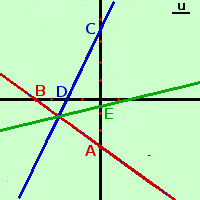
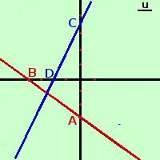

|
 Disegniamo la retta3x + 4y +12 = 0 sostituisco dei valori ad x per trovare y e viceversa: mi conviene, per semplificare i calcoli sostituire x=0 ed anche y=0 per x = 0 ottengo 4y+12 = 0 y=-3 quindi ho il punto A≡(0; -3) per y = 0 ottengo 3x+12 = 0 x=-4 quindi ho il punto B≡(-4; 0) Siccome per due punti passa una sola retta traccio (in rosso) la retta passante per i punti trovati  Disegniamo la retta√3 x - y + 2√3 = 0 sostituisco dei valori ad x per trovare y e viceversa: mi conviene, per semplificare i calcoli sostituire x=0 ed anche y=0 per x = 0 ottengo - y + 2√3 = 0 y=2√3 quindi ho il punto C≡(0; 2√3) per metterlo in grafico 2√3 vale circa 3,5 per y = 0 ottengo √3 x + 2√3 = 0 x= -2√3/√3 x=-2 quindi ho il punto D≡(-2; 0) Siccome per due punti passa una sola retta traccio (in blu) la retta passante per i punti trovati Disegniamo infine la retta x(5√3-6) - 13y + 10√3-24 = 0 Mi basta trovare un punto, perche', essendo la bisettrice, passa certamente per il punto comune alle due rette trovate sostituisco ad x il valore 0 per trovare y per x = 0 ottengo - 13y + 10√3-24 = 0 y=(10√3-24)/13 quindi ho il punto E≡[0; (10√3-24]/13) per metterlo in grafico (10√3-24)/13 vale circa -0,5 Traccio (in verde) la retta passante per il punto trovato e per il punto comune alle due rette |